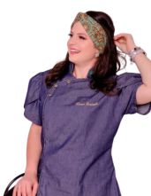

Olá! Meu nome é Karina e sou uma confeiteira apaixonada e dedicada.
Minha base é sólida, com formação em Tecnologia em Gastronomia, o que me proporciona um conhecimento aprofundado não só das técnicas culinárias, mas também da ciência por trás dos alimentos. Além disso, busco constante aprimoramento através de diversos cursos especializados em confeitaria, desde clássicos europeus até as últimas tendências.
Minha experiência se estende a outras áreas da culinária, permitindo-me criar sabores e combinações inovadoras que vão além do tradicional doce.
Estou aqui para transformar sua celebração ou seu desejo por um doce em uma experiência inesquecível, combinando técnica, criatividade e os melhores ingredientes.
